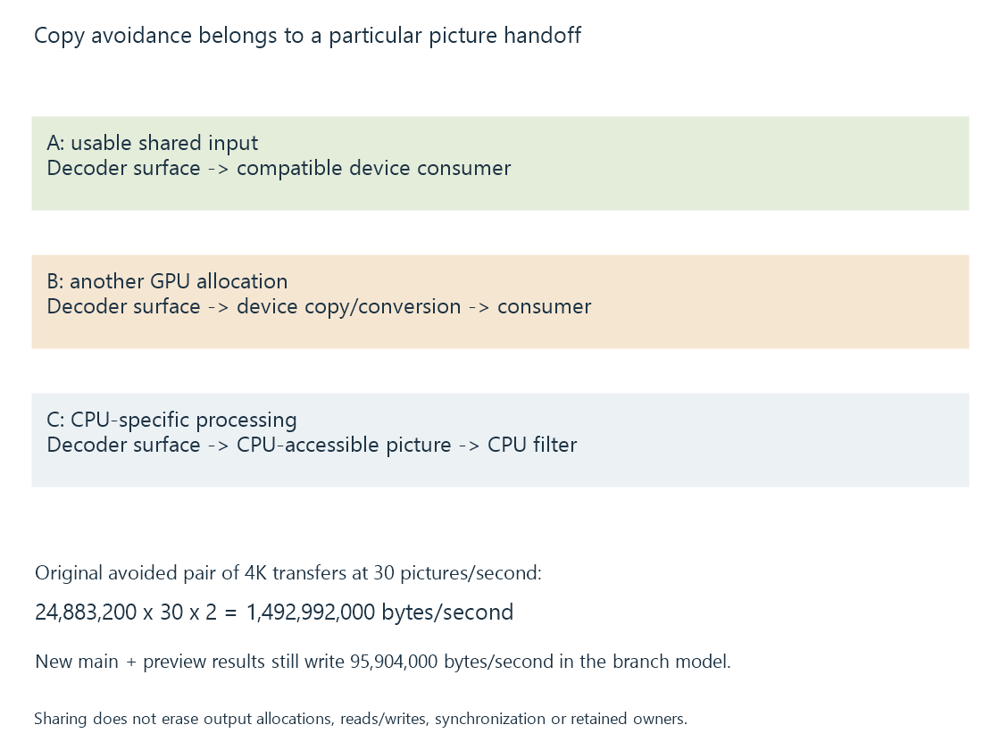

Zero-copy video pipelines and the boundary being avoided
A zero-copy claim identifies a picture handoff that avoids a particular data copy, while compatible storage, processing and synchronization determine the remaining pipeline traffic.
Zero-copy is useful when its boundary is specified. A pipeline can avoid copying a picture from device memory to CPU memory, or avoid a duplicate device allocation at one handoff, without eliminating every memory operation in the job.
The question is which data would otherwise be copied, between which resources, and whether the actual consumer can use the producer's storage.
Compare the actual handoff
Three original routes illustrate different claims:
| Route | Selected picture handoff |
|---|---|
| A | Decoder surface is directly usable by the compatible device consumer |
| B | Pictures stay on the GPU, but are copied/converted into another device allocation |
| C | Pictures are prepared in CPU-accessible memory for a CPU-only consumer |
Route A can avoid the particular intermediate copy. B avoids a device-to-host transfer but still has device-side picture traffic. C supplies a different consumer requirement.

The route label should describe those objects, rather than conclude “zero bytes moved” from a hardware-decoder name.
Compatible storage is the prerequisite
The next stage must accept the actual layout, device/context and picture format. Shared backing storage is useful only through a supported consumer relationship.
A buffer import can establish a reference to the same allocation. It does not fix an unsupported tiling modifier, pixel format or queue/context relationship.
Likewise, a processor needing another output format can create a new result allocation even if its input was imported without a copy. The handoff into the processor and the processor's own write are different operations.
Avoided transfers can have a large payload
For an original ideal 4K 4:2:0 picture using sixteen-bit sample storage, each frame has 24,883,200 bytes.
At thirty pictures per second, a modeled full download and same-sized upload carry:
24,883,200 × 30 × 2 = 1,492,992,000 bytes per second
Avoiding those two transfers removes that declared payload from that route. It does not make decoding, filtering or encoding stop accessing their picture data.
A scaling operation still samples input and writes output. A codec still uses references and reconstructed pictures. Those operations have their own traffic and caching behavior.
An API’s mapping contract matters
The traditional NVDEC mapping path documented in SDK 13.1 prepares and copies a decoded result into an output representation. Calling the operation “map” does not make it a no-movement proof.
The same SDK documents an opaque block-linear output path into application-provided CUDA arrays, plus compatible NVENC array input. Under its stated supported conditions, that arrangement avoids specified intermediate preparation/copies.
Those are concrete interface relationships. A media program needs integration for the selected path before its session can claim that result.
Linux DMA-BUF/DRM PRIME likewise supports sharing resources. The DMA-BUF article develops the layout, handle and completion context needed by that sharing.
Shared input can produce several new outputs
Consider an original route where a processor reads the decoder's P010 surface directly. It writes a prepared NV12 main picture and a separate preview result.
The decoder-to-processor input avoids an additional copy under this declared compatible relationship. The processor still has to create its changed results.
For ideal unpadded output layouts:
1920 × 1080 NV12 main output = 3,110,400 bytes
320 × 180 NV12 preview = 86,400 bytes
Combined result storage = 3,196,800 bytes per occurrence
At 30 occurrences/second = 95,904,000 bytes/second of result writes
That write payload excludes the processor's input reads, codec references and other traffic. It exists even though the input handoff shared storage without an extra copied picture.
The preview is also another consumer/resource path. Its completion and release can differ from those of the main encoder. Releasing one branch does not establish that every use of the shared input or result storage ended.
This makes a boundary-specific zero-copy claim compatible with substantial useful processing and several live output allocations.
Shared use retains synchronization and lifetime
A consumer cannot read unfinished producer output or overwrite a resource still used by another stage. Zero-copy sharing can increase the importance of preserving that exact storage through its consumers.
A larger pool can keep more pictures live so stages overlap. It has a corresponding memory cost, even when the handoffs avoid a copy.
State the measurable claim
For an Emby processing route, identify the producer surface, consumer format, actual import/transfer operations and CPU-versus-device stages.
“Decoder-to-encoder avoids a full-picture CPU round trip” is a defined claim when supported by the actual route. “Everything uses the GPU, therefore there are no copies” omits the device-local preparation and filter writes that still need examination.
See Also
- Hardware frame surfaces and GPU contexts
- Copy-back video pipelines
- DRM PRIME and DMA-BUF frame sharing
- GPU memory limits in video processing
- Mixed hardware and software filtering